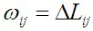

The original relative contact order (Plaxco et al., 1998) is given by:
Where unless otherwise stated, nr is the number of amino acid residues in a protein, nc is the total number of contacts, and DLij is the sequence separation, |j-i|, between contacting residues i and j in the protein sequence. A version of this index is known as Long range contact order (LR_CO) (Ma, 2007 #198). This index denotes the average residue separation between two sequentially distant residues with the Ca-Ca distance less than a cutoff of Rd (Rd =5, 6, 7 and 8Å). The main difference between these two indices is that the first compute the contacts between heavy atoms whereas the second just between Ca carbons. The weighted residue-wise modification of these indices implemented in PROTCAL is:
Where is a weighting factor equal to the product of any of the residues properties listed as property based indices for each residue involved in the contact, additionally it can be fixed at 1 in the case that not weight it wants to be used, And:
Here t_cont and s_cont are the cutoffs of the spatial and topological distances between two residues in contact (the spatial distances are measured between the alpha carbons). Such definition for contacts is used in all the indices using contacts in PROTCAL. Using such modified relative contact order the original global descriptor (considering the contacts only between alpha carbons) can be obtained summing all the obtained residue-wise values using .
Plaxco, K.W., Simons, K.T., and Baker, D., 1998. Contact Order, Transition State Placement and the Refolding Rates of Single Domain Proteins. J. Mol. Biol. 277, 985-994.